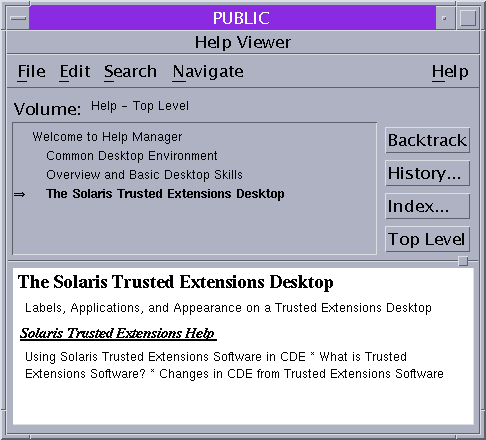

Working on a Labeled System
Caution - If the trusted stripe is missing from your workspace, contact the security administrator. The
problem with your system could be serious.
The trusted stripe should not appear during login, or when you lock your
screen. If the trusted stripe shows, contact the administrator immediately.
How to Lock and Unlock Your Screen
If you leave your workstation briefly, lock the screen.
- To lock your screen, do one of the following:
- In Trusted CDE, click the screen lock icon in the workspace switch area
of the Front Panel.
Figure 3-1 Front Panel Switch Area

- In Trusted GNOME, choose Lock Screen from the Main menu.
The screen turns black. At this point, only you can log in again.
Note - The trusted stripe should not appear when the screen is locked. If the
stripe does appear, notify the security administrator immediately.
- To unlock your screen, do the following:
- Move your mouse until the Lock Screen dialog box is visible.
If the Lock Screen dialog box does not appear, press the Return
key.
- Type your password.
This action returns you to your session in its previous state.
How to Log Out of Trusted Extensions
At most sites, the screen automatically locks after a specified period of idleness.
If you expect to leave the workstation for awhile, or if you expect
someone else to use your workstation, log out.
- To log out, do one of the following:
- Confirm that you want to continue to log out.
- Click OK to log out.
- Otherwise, click Cancel.
How to Shut Down Your System
Logging out is the normal way to end a Trusted Extensions session.
Use the following procedure if you need to turn off your workstation.
Note - If you are not on the console, you cannot shut down the
system. For example, Sun RayTM clients cannot shut down the system.
- To shut down the system, do one of the following:
How to View Your Files in a Labeled Workspace
To view your files, you use the same applications that you would
use in Trusted CDE or Trusted GNOME on a Solaris system. If you are
working at multiple labels, only the files that are at the label of
the workspace are visible.
- In a Trusted CDE workspace, open a terminal window or the File
Manager.
- Open a terminal window and list the contents of your home directory.
Click mouse button 3 over the background. From the Workspace menu, choose Programs
–> Terminal.
- On the Front Panel, click the File Manager.
Figure 3-2 A Labeled File Manager

The File Manager appears with the contents of your home directory at that
label.
The File Manager opens at the same label as the current workspace.
The application provides access to only those files that are at its label.
For details about viewing files at different labels, see Containers and Labels.
- In a Trusted GNOME workspace, open a terminal window or the File Browser.
- Open a terminal window and list the contents of your home directory.
Click mouse button 3 over the background. From the menu, choose Open Terminal.
- Double-click the Documents folder or the This Computer folder on your desktop.
These folders open in a File Browser. The File Browser application opens at
the same label as the current workspace. The application provides access to only
those files that are at its label. For details about viewing files at
different labels, see Containers and Labels.
How to Access the Trusted Extensions Man Pages
How to Access Trusted Extensions Online Help
- In Trusted CDE, click the Help icon on the Front Panel.
Figure 3-3 Trusted Extensions Online Help

- Click the Index button.
- In the index, search All Volumes for the word Trusted.
- Click the links to find help that is specific to Trusted Extensions.
- In Trusted GNOME, click Help from the Trusted Path menu.
- To open the Trusted Path menu, click the trusted symbol at the left
of the trusted stripe.
- To find task-specific help, click the Help button on the trusted application that
you are currently using, such as the Device Manager.
How to Customize the CDE Workspace Menu
In Trusted CDE, users and roles can customize the Workspace menu for
each distinct label.
- In your current workspace, start to customize the Workspace menu.
- If you are adding items to the Workspace menu, do the following:
- For each program, find the program and add it.
Click the Browse button to show the files that are available for this
workspace at this label.
- Select the program.
- Close the window.
The items are added to the top of the Workspace menu.
- If you are modifying the Workspace menu, do the following:
- Confirm the menu changes, or cancel.
How to Access Initialization Files at Every Label
Linking a file or copying a file to another label is useful
when you want to make a file with a lower label visible at
higher labels. The linked file is only writable at the lower label. The
copied file is unique at each label and can be modified at each
label. For more information, see .copy_files and .link_files Files in Solaris Trusted Extensions Administrator’s Procedures.
Before You Begin
You must be logged in to a multilevel session. Your site's security
policy must permit linking.
Work with your administrator when modifying these files.
- Decide which initialization files you want to link to other labels.
- Create or modify the ~/.link_files file.
Type your entries one file per line. You can specify paths to
subdirectories in your home directory, but you cannot use a leading slash. All
paths must be within your home directory.
- Decide which initialization files you want to copy to other labels.
Copying an initialization file is useful when you have an application that always
writes to a file with a specific name, and you need to
separate the data at different labels.
- Create or modify the ~/.copy_files file.
Type your entries one file per line. You can specify paths to
subdirectories in your home directory, but you cannot use a leading slash. All
paths must be within your home directory.
Example 3-1 Creating a .copy_files File
In this example, the user wants to customize several initialization files per label.
In her organization, a company web server is available at the Restricted level.
So, she sets different initial settings in the .mozilla file at the Restricted
level. Similarly, she has special templates and aliases at the Restricted level. So, she
modifies the .aliases and .soffice initialization files at the Restricted level. She can
easily modify these files after creating the .copy_files file at her lowest label.
% vi .copy_files
# Copy these files to my home directory in every zone
.aliases
.mozilla
.soffice
Example 3-2 Creating a .link_files File
In this example, the user wants her mail defaults and shell defaults to
be identical at all labels.
% vi .link_files
# Link these files to my home directory in every zone
.cshrc
.mailrc
Troubleshooting
These files do not have safeguards for dealing with anomalies. Duplicate entries in
both files or file entries that already exist at other labels can cause
errors.
How to Interactively Display a Window Label
This operation can be useful when your system is not configured to
display labels in the window frames.
- Choose Query Window Label from the Trusted Path menu.
The pointer changes to a question mark.
- Move the pointer around the screen.
The label for the region under the pointer is displayed in a small
rectangular box at the center of the screen.
Figure 3-4 Query Window Label Operation

- Click the mouse button to end the operation.
How to Perform Some Common Desktop Tasks in Trusted Extensions
Some common tasks are affected by labels and security. In particular, the following
tasks are affected by Trusted Extensions:
- Empty the trash.
The trash can contains files only at the label of the workspace. Delete
sensitive information as soon as the information is in the trash can.
- In Trusted CDE, open the Trash Can on the Front Panel.
Choose File -> Select All, then File -> Shred. Then, confirm.
- In Trusted GNOME, click mouse button 3 over the Trash Can icon on
the desktop.
Choose Empty Trash, then confirm.
- Find calendar events at every label.
Calendars show only the events at the label of the workspace that
opened the calendar.
- In a multilevel session, open your calendar from a workspace that has a
different label.
- In a single-level session, log out. Then, log in at a different label
to view the calendar events at that label.
- In Trusted CDE, restore the Front Panel by clicking the trusted stripe.
A minimized Front Panel is restored.
- On both desktops, save a customized desktop at every label.
You can customize the workspace configuration for every label at which you log
in.
- Configure the desktop.
Arrange windows, establish the font size, and perform other customizations.
Note - Users can save desktop configurations. Roles cannot save desktop configurations.
- Save the current workspace.
- In Trusted CDE, open the Style Manager. Choose your settings in the Startup
icon.
Note - The Style Manager requires the trusted path. Run the Style Manager from the
Front Panel or from the Workspace menu, where the Style Manager has the
trusted path.
Your desktop is restored in this configuration when you next log in at
this label.
- In Trusted GNOME, click the Main menu.
- Click Preferences > Sessions.
- Click the Session Options button.
- Click Remember currently running applications, then close the dialog box.
Your desktop is restored in this configuration when you next log in at
this label.